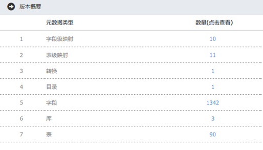
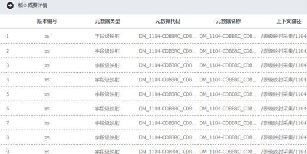
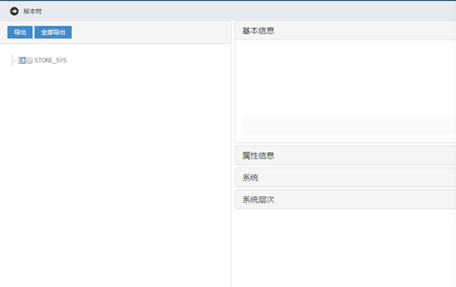

元数据管理系统用户使用手册
元数据管理系统用户使用手册
版本操作概述：查询出来的版本，我们可以对相关数据进行版本操作。
版本操作操作内容：
Ø 概览
Ø 版本树
版本操作操作步骤：
1. 在版本维护页面有这个，点击概览或者版本树，就可以查看版本概览或版本树。概览：

2. 左边是一栏是元数据类型，包括字段级映射，表级映射，转换，目录，字段，库，表等，右边是数量，点击数量就可以出现该元数据类型的详情：

3. 点击版本树出现以下信息，包括基本信息，属性信息，系统，系统层次：

4. 在左边栏，可以导出版本信息，点击要导出的版本，再点即可。
图形有问题
缺图